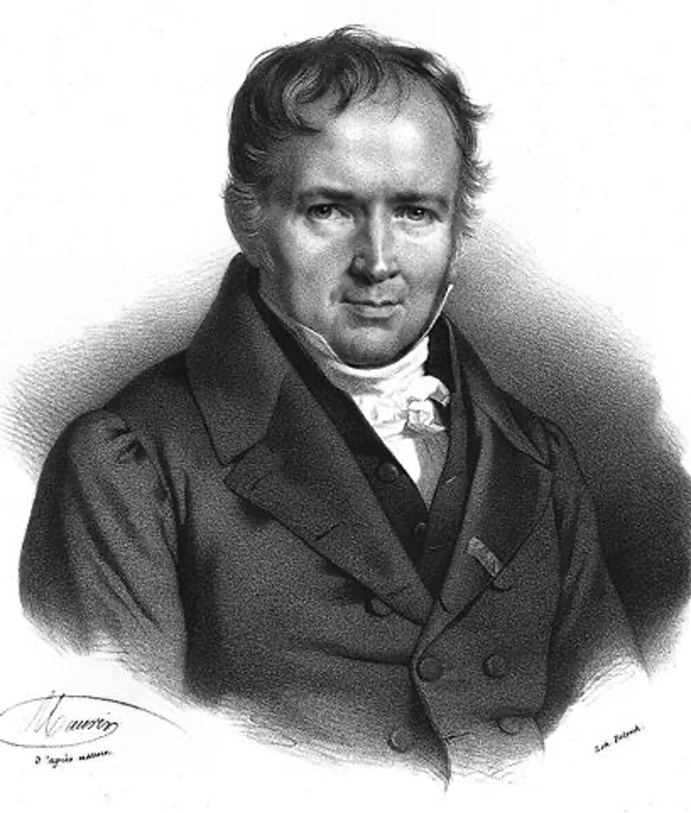
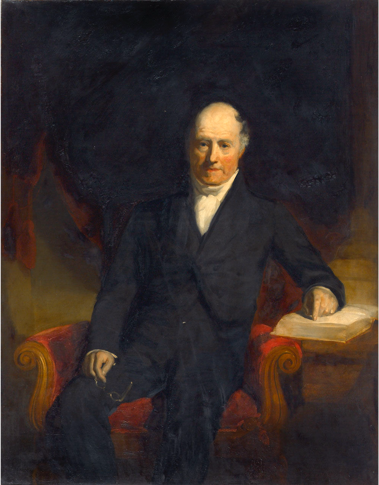

工程数学
Engineering Mathematics
李小飞 光电科学与技术学院
2023-03-01
1. 课程简介：

17世纪微积分出现，物理学家写方程，数学物理学家解方程，试图通过方程的解来理解大千世界
数学分支：

数学：逻辑，算术，分析，统计，结构
分数构成：
- 平时成绩： 15%
- 课堂测试： 15%
- 期末考试： 70%
教学效果：

教学内容：
- 第一章 绪论
- 第二章 偏微分方程
- 第三章 薛定谔方程
- 第四章 氢原子薛定谔方程
- 第五章 特殊函数及其应用
参考书目：
- 教材：《工程数学讲义》 李明奇，钟尔杰，国防工业出版社， 待出版
- Mathematics for Physicists》 Shaw, G.
- 《数学物理方法》 姚瑞正，梁家宝 ，武汉大学出版社，1992
- 《数学物理方程与特殊函数》南京工学院教研组，人民教育出版社，1983
- 《数学物理方程》孙振绮，机械工业出版社，2004
2. 数理名家
- 拉普拉斯（法）
- 泊松（法）
- 勒让德（法）
- 傅里叶（法）
- 格林（英）
- 贝塞尔（德）
拉普拉斯

乾隆年间生成，解拉普拉斯方程，开数理方程先河
泊松
泊松方程: 发现Laplace方程只是Poisson方程的特例
勒让德
勒让德方程: 发现球坐标系Laplace方程与勒让德方程等效
傅里叶

分离变量法，积分变换法，傅里叶级数，傅里叶变换，叠加原理
格林
格林函数: Laplace方程和泊松方程的解都是格林函数的叠加
贝塞尔
柱坐标系下Laplace方程是贝塞尔方程，解是一系列贝塞尔函数的叠加
新方程与新解法
- 薛定谔方程
- 爱因斯坦场方程
3. 常微分方程
- 衰减、增长模型
- 振动模型
- 通用解法
例-1：求解放射性衰减方程
$$\frac{du}{dt} = - r u, \qquad u(t_0) = u_0$$解：方程可分离变量
\begin{aligned} \frac{du}{u} &= - rdt\\ \ln u &=-rt+C\\ u(t)&=C'exp(-rt) \\ \end{aligned}代入定解条件（t=0), 有
\begin{aligned} u(t_0) & = C'exp(-rt_0) \\ & = u_0 \\ \implies C' & =u_0 \end{aligned} 方程的解为： $$ u(t)=u_0 exp(-rt) $$ 显然，这是一个指数哀减。当$r>0$时, 当$t \to \infty$， $u(t) \to 0$
衰减过程的一个重要参数是半衰期（T）
解：在T时刻，体系的质量只有原来的一半
\begin{aligned} \frac{1}{2}u_0 &=u(T) \\ & =u_0 exp(-rT) \\ T &=\frac{1}{r} \ln 2 \\ & \approx \frac{1}{r} \times 0.6931 \end{aligned} 结束！
例-2： 求人口增长的模型(逻辑斯蒂)
解：方程可分离变量 \begin{aligned} \frac{1}{u(1-u / K)}du &=r d t \\ \frac{u / K+(1-u / K)}{u(1-u / K)} d u &=r d t \\ (\frac{1}{K-u}+\frac{1}{u} ) d u &=r d t \\ -\ln (K-u)+\ln u &=r t+C \\ \end{aligned}
解：方程可分离变量 \begin{aligned} \frac{1}{u(1-u / K)}du &=r d t \\ \frac{u / K+(1-u / K)}{u(1-u / K)} d u &=r d t \\ (\frac{1}{K-u}+\frac{1}{u} ) d u &=r d t \\ -\ln (K-u)+\ln u &=r t+C \\ \end{aligned}
It’s a presentation tool
inspired by the idea behind prezi.com
and based on the power of CSS3 transforms and transitions in modern browsers.
visualize your big thoughts
and tiny ideas
by positioning, rotating and scaling them on an infinite canvas
the only limit is your imagination
want to know more?
use the source, Luke!
one more thing...
have you noticed it’s in 3D*?
* beat that, prezi ;)